In dit artikel wordt eerst het basisontwerp van een netgekoppelde, residentiële FV installatie behandeld, waarna een prognose wordt gemaakt van de energiestromen tussen FV installatie, verbruikersinstallatie en net, waarbij zelfvoorziening en zelfconsumptie onder de loep worden genomen. De vergelijking wordt gemaakt tussen een installatie zonder en met batterijopslagsysteem. Tot slot wordt bekeken wat de mogelijke impact van beide installaties kan zijn op de elektriciteitsfactuur.
Volgens Zonnekaart Vlaanderen zou circa de helft van het dakoppervlak van mijn woning ideaal geschikt zijn om zonnepanelen op te plaatsen. Nochtans, in zuidelijke richting tegenover mijn woning bevinden zich twee hoge appartementsgebouwen. Het platte dak van de achterbouw -volgens "Zonnekaart Vlaanderen" een ideaal oppervlak voor zonnepanelen- is ook lager gelegen dan het gedeelte vooraan de woning (met zadeldak), waarvan de voorgevel naar het zuiden is georiënteerd.
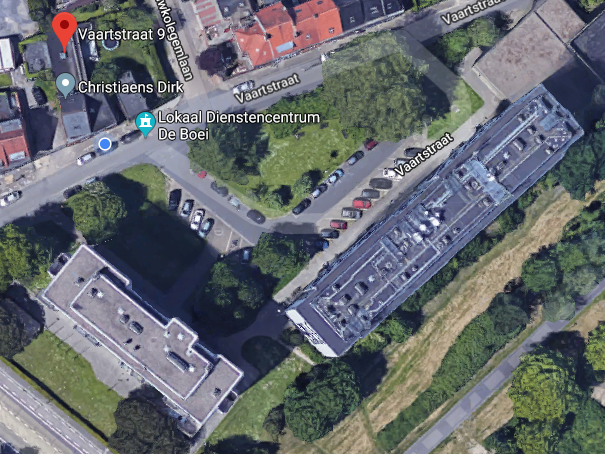
Daarom wilde ik zelf eens nagaan welke zonneopbrengst er kan verwacht worden, alvorens ik zonnepanelen laat plaatsen op het platte dak van de achterbouw. Ik verkies het platte dak om twee redenen:
De prognoseberekening van de jaarlijkse zonneopbrengst van een FV installatie vergt, omwille van de continu variabele ingangsgrootheden van het systeem gedurende het jaar, met name de invallende bestralingssterkte van de zon en de omgevingstemperatuur, ellenlange berekeningen, die onmogelijk op papier zijn uit te voeren. Men moet dus onvermijdelijk zijn toevlucht nemen tot de computer om al dat rekenwerk te verrichten.
Een FV installatie, en zowat alles wat daarbij komt kijken, ook de zon, is fysisch of kan op een abstracte manier worden voorgesteld als zijnde samengesteld uit 'objecten', die elk afzonderlijk in computercode kunnen worden gemodelleerd. Dit wordt het "object-georiënteerd paradigma" genoemd. Deze methode van computerprogrammeren laat ook heel wat creativiteit van de programmeur toe om de fysische wereld door middel van een computerprogramma te simuleren. Object-georiënteerd programmeren laat ook toe om het pad naar de oplossing van een langdradig, complex of iteratief vraagstuk overzichtelijk, in afgebakende eenheden of subsystemen op te splitsen, die met elkaar kunnen interageren om uiteindelijk de oplossingen aan de gebruiker te presenteren.
De berekeningsmethoden heb ik geïmplementeerd met de programmeertaal Python. In een drietal Jupyter Notebooks worden de computerberekeningen stap voor stap uitgevoerd en toegelicht. De complete broncode van het project kan men hier terugvinden.
Hierna volgt een algemene bespreking over de wijze waarop het basisontwerp en de energieanalyse stap voor stap worden uitgevoerd zonder evenwel diep op de achterliggende computercode in te gaan. In de tekst worden koppelingen naar de Jupyter Notebooks vermeld, waarin de berekeningen gedemonstreerd worden. Het is niet de bedoeling van dit artikel om elke wiskundige formule en elke regel in het computerprogramma van naaldje tot draadje te verklaren. In de eerste plaats is het de bedoeling om te illustreren hoe complexe of uitgebreide vraagstukken, waar de opbrengstprognoseberekening van een FV installatie een voorbeeld van is, met behulp van de computer op een boeiende manier bestudeerd kunnen worden.
Wanneer men overweegt om zonnepanelen te installeren, is het alvast goed om weten hoeveel direct of rechtstreeks zonlicht men in de loop van een jaar kan verwachten op de gewenste locatie van de zonnepanelen. Reliëf, bebouwing, begroeiing of andere obstakels kunnen gedurende bepaalde periodes van het jaar of van de dag verhinderen dat direct zonlicht de zonnepanelen kan bereiken.
Een (cartesiaans) zonnebaandiagram beschrijft de baan van de zon langs de sferische hemelkoepel op een welbepaalde locatie (aangeduid met de lengte- en breedtegraad) en op een welbepaalde dag van het jaar.
De positie van de zon aan de hemelkoepel ten opzichte van een lokale waarnemer op de locatie in kwestie kan worden aangeduid met de azimut- en de elevatiehoek.
De azimuthoek situeert zich in het horizontale vlak waarop de waarnemer staat. De elevatiehoek duidt de hoogte van de zon aan boven dit horizontale vlak. De elevatiehoek is het complement van de zenithoek. De elevatiehoek is overdag een scherpe hoek tussen 0° en 90°. Als de elevatie 0° bedraagt, wil dit betekenen dat de zon zich aan de horizon bevindt (dit is de laagste zonnestand, rond zonsopgang en -ondergang).
Voor de aanduiding van de azimuthoek bestaan verschillende referentiestelsels. Hier valt 0° samen met het noorden. Het oosten ligt op 90°, het zuiden op 180° en het westen op 270°.
In een cartesiaans zonnebaandiagram wordt het ruimtelijk traject van de zon langs de hemelkoepel beschreven door de azimuthoek van de zon langs de horizontale as van het diagram en de elevatiehoek van de zon langs de verticale as van het diagram uit te zetten.
Zonder reliëf, bebouwing, begroeiing,... zou de horizon een perfect rechte lijn zijn. De veranderlijke contour van de horizon veroorzaakt door het reliëf, bebouwing, begroeiing (bomen) of andere obstakels, die gezien worden vanuit de positie van de lokale waarnemer, kan men evenzeer met behulp van azimut- en elevatiehoeken op het zonnebaandiagram uitzetten. Daarmee bekomt men het horizonprofiel.
Waar op het zonnebaandiagram de positie van de zon onder het horizonprofiel ligt, betekent dit feitelijk dat de zon achter de horizon is verscholen. Op die tijdstippen kan er geen direct zonlicht op de beschouwde locatie invallen, maar enkel diffuus zonlicht dat via de hemelkoepel en het grondoppervlak wordt weerkaatst.
De wiskundige formules om de positie van de zon op elk tijdstip van de dag te berekenen heb uit het boek Heating and Cooling of Buildings, 3Ed. (T. Agami Reddy, Jan F. Kreider, Peter S. Curtiss, Ari Rabl, 2017) gehaald. Deze formules zijn vrij eenvoudig in een computerprogramma te implementeren.
Het horizonprofiel dat vanaf een welbepaalde locatie wordt waargenomen, moet opgemeten worden. Hieronder wordt een praktische methode voorgesteld.
Er zijn diverse gesofisticeerde, dan wel prijzige meettoestellen en softwareprogramma's voor professionelen verkrijgbaar, waarmee het horizonprofiel nauwkeurig kan worden opgemeten en waarmee een gedetailleerde beschaduwingsanalyse kan worden gemaakt. Daarnaast bestaan er ook rudimentaire, goedkope hulpmiddelen, zoals een gradenboog (ook wel protractor genoemd). Omdat daarmee het meetwerk echter nogal omslachtig verloopt, ben ik op zoek gegaan naar een meer gebruiksvriendelijk en eigentijdser alternatief. Zo vond ik op Google Play de app AngleCam.
AngleCam is een camera-applicatie met in het midden op het beeldscherm een kruisvizier waarmee men naar een ruimtelijk punt kan richten. Met behulp van ingebouwde sensoren in de smartphone bepaalt de app de azimut- en elevatiehoek van het punt waar de cameralens naar wordt gericht. Van elke foto slaat de app de hoeken in een csv-bestand op (csv is de afkorting van comma separated value). Daarmee kan een waarnemer, die zich op een welbepaalde locatie bevindt, zonder zelf meetwerk te hoeven verrichten eenvoudig de azimut- en elevatiehoek bepalen van "horizonpunten" welke de contour van het horizonprofiel begrenzen.
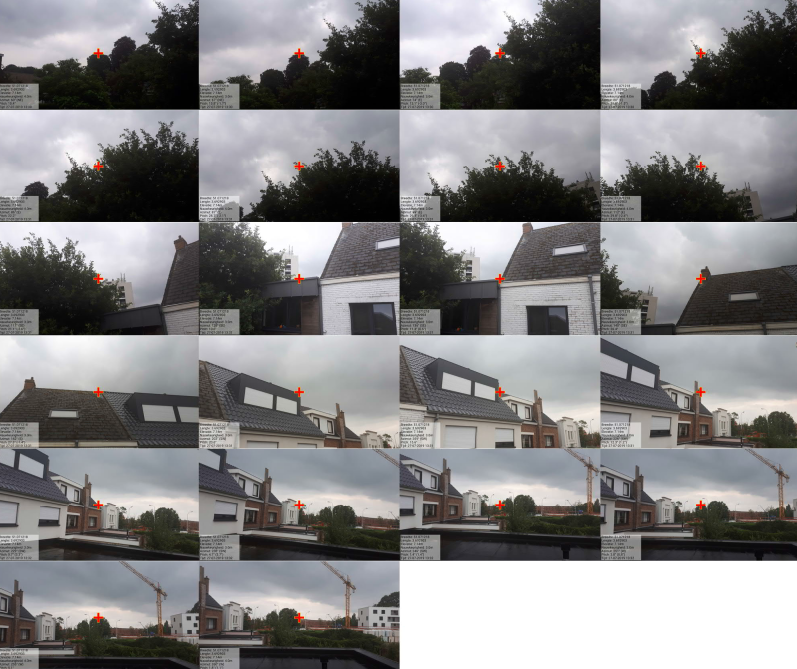
Na input van de azimut- en elevatiehoeken van de horizonpunten in het computerprogramma, berekent de computer het horizonprofiel dat gezien wordt vanuit de beschouwde locatie. Vervolgens kan het computerprogramma het zonnebaandiagram tekenen waarop dan het horizonprofiel gesuperponeerd wordt.
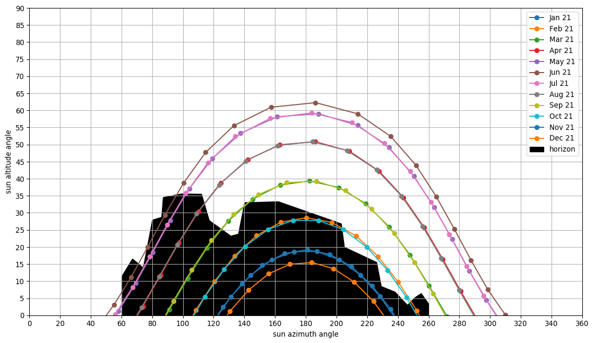
De afbeelding hierboven toont het horizonprofiel gezien vanop de voorste helft van het platte dak van de achterbouw van mijn woning.
Nadat het horizonprofiel, dat altijd met een welbepaald referentie- of waarnemerspunt is verbonden van waaruit het wordt waargenomen, is berekend, kan het computerprogramma ook een ander horizonprofiel berekenen dat vanuit een ander referentiepunt zou worden waargenomen. Daartoe is het wel nodig dat ook de vlakke afstand wordt ingevoerd tussen het aanvankelijk referentiepunt, van waaruit de horizonpunten werden gefotografeerd, en deze horizonpunten. Deze afstanden kan men eenvoudig in Google Maps opmeten (klik met de rechtermuisknop op de kaart in Google Maps en selecteer Afstand meten in het popupmenu dat verschijnt).
In Jupyter Notebook DEEL 1 | ZONNEBAANDIAGRAM EN HORIZONPROFIELEN wordt de computercode gedemonstreerd om de horizonprofielen te berekenen. Het computerprogramma zal de horizonprofielen verder in de energieanalyse gebruiken om de zonnebestralingssterkte te berekenen op de zonnepanelen. Op tijdstippen dat de zon achter een horizonprofiel is verscholen, zal het computerprogramma enkel het diffuus aandeel van het zonlicht in de berekeningen meenemen.
Met behulp van het zonnebaandiagram en de horizonprofielen kan men inzicht verwerven over voor welke perioden van het jaar en/of van de dag men wel dan geen direct zonlicht op de zonnepanelen kan verwachten.
Echter, daarmee is nog niet geweten welke opbrengst in kWh op jaarbasis kan verwacht worden van de zonnepanelen. Alvorens een opbrengstvoorspelling kan worden gedaan, moet eerst het basisontwerp van de FV installatie worden gemaakt.
Dit houdt vooreerst in dat een layout van de plaatsing van zonnepanelen op het beschikbare dakoppervlak wordt gemaakt en dat de oriëntatie (azimuthoek) en de hellingshoek van de zonnepanelen wordt bepaald.
De afbeelding hieronder toont een mogelijke layout.
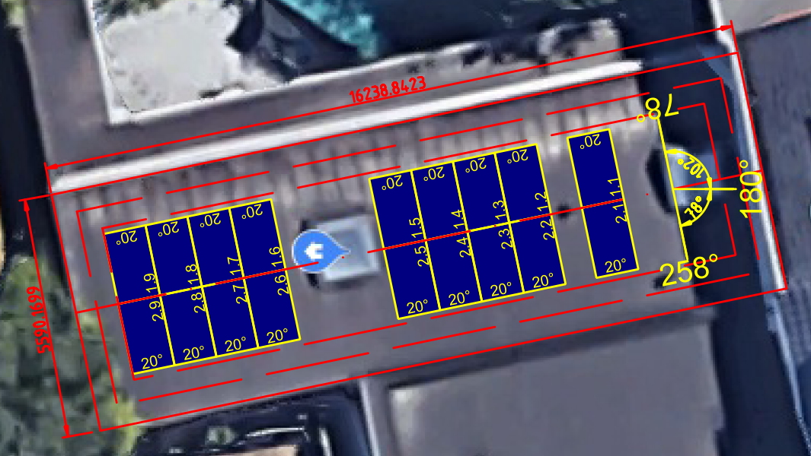
Voorts worden in het basisontwerp ook al een specifiek zonnepaneel en een specifieke omvormer geselecteerd en worden de solarkabels, die de zonnepanelenmatrices of -strengen verbinden met de FV omvormer, gedimensioneerd, m.n. de bepaling van de kabellengten en de vereiste dwarsdoorsnede of sectie van de kabels om het spanning- en vermogensverlies te beperken.
Afhankelijk van de resultaten kan het basisontwerp nadien nog altijd worden gewijzigd. Dat is immers maar een kleine moeite als een computer alle berekeningen in een oogwenk opnieuw kan uitvoeren.
Zonnepanelen, kabels en omvormer zullen samen het globale rendement van de FV installatie bepalen. Zonder dit rendement te kennen, kan er geen nauwkeurige schatting worden gemaakt van de "groene energie" die de omvormer zal afleveren. Noteer dat het rendement voortdurend zal variëren afhankelijk van de zonnebestralingssterkte of irradiantie (eenheid: W/m²) en van de buitentemperatuur.
In Jupyter Notebook DEEL 2 | BASISONTWERP VAN DE FOTOVOLTAÏSCHE INSTALLATIE wordt de computercode gedemonstreerd en toegelicht waarmee het basisontwerp van de FV installatie wordt gemaakt.
De computerroutines voor de bepaling van de (V,I)-karakteristieken van de FV matrix i.f.v. irradiantie en buitentemperatuur en voor het dimensioneren van de omvormer en de bekabeling steunen op het boek Planning and Installing Photovoltaic Systems, 3Ed. (Deutsche Gesellschaft für Sonnenenergie [DGS], 2013).
Volgende stappen worden na elkaar in het basisontwerp van een FV installatie doorlopen:
Men voert aan het computerprogramma de technische kenmerken toe van het zonnepaneel, welke zijn terug te vinden in de datasheet van het zonnepaneel.
Vervolgens configureert men met dit zonnepaneel één of meer FV matrices. Een FV matrix is samengesteld uit N strengen van telkens M zonnepanelen (M x N-matrix). In de regel zal men zonnepanelen in één matrix combineren die aan dezelfde zonnebestralingscondities zullen blootgesteld worden. Omvormers zijn doorgaans met 2 of soms meer zgn. MPPT-ingangen uitgerust (MPPT staat voor ‘Maximum Power Point Tracking’). Aan elke MPPT-ingang kan een FV matrix verbonden worden. MPPT houdt in dat de omvormer over een soort intelligent orgaan beschikt waarmee het voortdurend het werkpunt van de FV matrix kan zoeken dat het grootste opbrengstvermogen oplevert. Dit werkpunt wordt het 'Maximum Power Point' (MPP) genoemd.
Eenmaal de FV matrix of matrices zijn gedefinieerd, kan het computerprogramma berekenen welke minimale sectie de strengkabels in een matrix moeten bezitten, opdat het spanningsverlies over de kabels niet meer dan 1% zou bedragen. Daartoe dient men eerst de kabellengten door te geven aan het computerprogramma . Op basis van de teruggegeven resultaten kan dan een standaard geleidersectie worden geselecteerd die groter moet zijn dan de berekende minimale sectie.
Eenmaal de FV matrix of matrices gedefinieerd zijn, kan men ook nagaan welk werkingsgebied de MPPT-ingangen van de omvormer moeten bezitten om ook onder waarschijnlijk voorkomende extreme combinaties van irradiantie en buitentemperatuur het MPP-vermogen vanuit de FV matrix naar AC-vermogen te kunnen omzetten. Het werkingsgebied van een MPPT-ingang wordt begrensd door de minimum MPP-spanningslimiet, de maximum DC-spanningslimiet, de DC-stroomlimiet en de DC-vermogenlimiet.
Daarmee kan vervolgens een geschikte omvormer worden geselecteerd. De technische kenmerken vermeld in de datasheet van een kandidaat-omvormer worden daartoe in het computerprogramma ingevoerd.
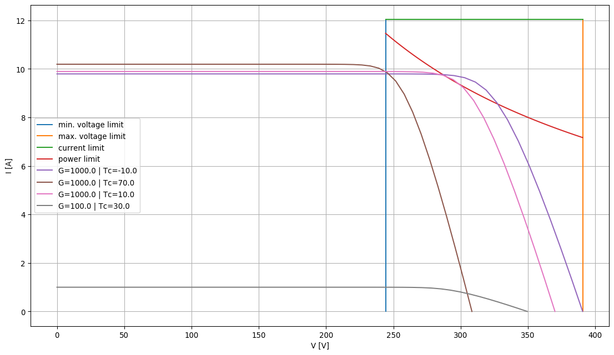
Belangrijk voor een nauwkeurige schatting van de zonneopbrengst zijn de rendementen van de omvormer onder deelbelasting (belastingen kleiner dan het nominaal vermogen van de omvormer) en onder variabele DC-ingangsspanning van de FV matrix (voornamelijk afhankelijk van de zonneceltemperatuur). Deze deellastrendementswaarden vindt men doorgaans terug in de datasheet of in de handleiding van de omvormer.
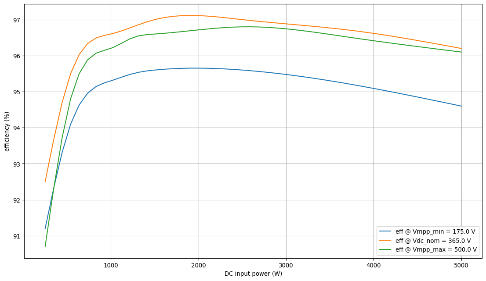
NOOT
Wanneer de FV matrix of matrices zijn gedefinieerd, kan het computerprogramma voorts nagaan of er smeltzekeringen of DC-automaten zullen vereist zijn om zonnepanelen te beschermen tegen zgn. inverse stroom (reverse current). Een inverse stroom kan zich voordoen als meerdere strengen van zonnepanelen parallel met elkaar verbonden zijn om zo een matrix te vormen. Als er in één van de strengen een defect zou optreden (bv. een kortsluiting in een zonnepaneel), zodanig dat de spanning van deze streng beduidend zakt onder de spanning van de andere strengen in de matrix, dan zullen de 'goede strengen' een stroom in omgekeerde zin door de 'slechte streng' sturen. In extremis kan die inverse stroom gelijk zijn aan de som van de kortsluitstromen van de 'goede strengen'. Inverse stroom kan leiden tot een sterke opwarming van de zonnepanelen en bijgevolg tot schade aan zonnepanelen door oververhitting. Als de totale inverse stroom door een zonnepaneel groter kan worden dan de maximale inverse stroom die het zonnepaneel nog kan verdragen, is een overstroombeveiliging van de strengen vereist.
Wanneer de beschaduwingsanalyse en het basisontwerp achter de rug zijn en de layout en configuratie van de FV installatie vastliggen, kan in principe voor elk moment overdag (tussen zonsopgang en -ondergang) en dit over het ganse jaar worden berekend welk AC-vermogen de FV installatie (bij benadering) zal leveren bij een gegeven verloop van de zonnebestralingssterkte (irradiantie, W/m²) en de buitentemperatuur.
Uiteraard moet men dan weten welke zonnebestralingssterkte en buitentemperatuur er in de loop van een dag kan verwacht worden op de gegeven locatie.
PVGIS 5 is een online, gratis te raadplegen meteorologische database onder beheer van de Europese Commissie. Onder meer kan men uit deze database voor een gegeven locatie de weerdata van een zgn. Typisch Meteorologisch Jaar ophalen. Een 'Typisch Meteorologisch Jaar' (TMY) wordt statistisch samengesteld uit 12 maanden die geselecteerd worden uit 10 opeenvolgende jaren, dewelke een typisch beeld moeten weergeven van het klimaat of het weer van de voorbije 10 jaar. Het huidig meest recente TMY-databestand in PVGIS 5 heeft betrekking op de jaren 2007 t.e.m. 2016. Het TMY-databestand bevat voor elk uur van het jaar een dataset. In zo'n dataset vindt men ook de globale irradiantie op het horizontaal oppervlak en de buitentemperatuur terug. Daarmee kan voor elk uur van het 'Typisch Meteorologisch Jaar' worden berekend welk AC-vermogen de FV omvormer zal afleveren.
Het algoritme om de zonneopbrengst te berekenen, bestaat in grote lijnen uit de volgende stappen:
Het TMY-databestand van de beschouwde geografische locatie dat vanuit de PVGIS 5 database is gedownloaded wordt aan het computerprogramma toegevoerd. Het computerprogramma verwerkt dit databestand en groepeert de uurlijkse data per dag van het jaar.
Vervolgens wordt, voor elk uur van elke dag van het jaar en voor elke FV matrix die op de omvormer is aangesloten, de globale irradiantie op het horizontaal oppervlak, dat uit het TMY-databestand is gehaald, omgerekend naar de irradiantie die uurlijks zal invallen op de FV matrix. De formules om die omrekening te maken zijn uit het boek Heating and Cooling of Buildings, 3Ed. overgenomen. De globale irradiantie die invalt op de zonnepanelen is samengesteld uit een directe en diffuse component. Op momenten dat de zon achter het horizonprofiel is verscholen, wordt enkel de diffuse component in rekening gebracht.
De (V,I)-karakteristiek van de FV matrix bij de gegeven irradiantie en buitentemperatuur wordt uurlijks berekend. Er wordt aangenomen dat de omvormer steeds in staat zal zijn om het MPP te volgen. Dit impliceert dat op elk moment de FV matrix de maximumvermogenstroom (MPP-stroom) en de maximumvermogenspanning (MPP-spanning) aan de omvormer afgeeft.
Het spanning- en vermogensverlies over de DC-kabels wordt uurlijks berekend.
Nadat op een gegeven uur het geproduceerde DC-vermogen en de DC-spanning van elke aangesloten FV matrix is berekend, wordt het rendement van de omvormer berekend. Indien het momentaan aangeboden DC-vermogen van de FV matrix groter zou zijn dan hetgeen de omvormer maximaal kan verwerken, wordt het geaccepteerd vermogen begrensd tot deze laatste waarde.
Als het rendement is berekend, kan ook het AC-vermogen aan de uitgang van de omvormer worden berekend.
Wanneer het AC-vermogen aan de uitgang van de omvormer voor elk uur van een dag is bepaald, berekent het computerprogramma voor elke dag van het jaar d.m.v. interpolatie een vermogencurve die vervolgens wordt geïntegreerd tussen zonsopgang en zonsondergang. Deze integratie levert de dagopbrengst op (de hoeveelheid geproduceerde wisselstroomenergie in kWh over één dag). De som van de verwachte dagopbrengsten in een volledig jaar resulteert finaal in de geschatte jaarlijkse opbrengst.
In Jupyter Notebook DEEL 3 | SCHATTING VAN DE ENERGIEOPBRENGST wordt de computercode gedemonstreerd waarmee de verwachte jaarlijkse energieopbrengst wordt berekend van de FV installatie met de zonnepanelen-layout zoals hierboven getoond. Deze FV installatie bestaat uit:
Twee FV matrices van telkens 9 zonnepanelen Sharp NU-RC300 in één streng. Beide matrices (strengen) bezitten een piekvermogen van ca. 2,7 kWp onder STC-condities (irradiantie 1000 W/m² en celtemperatuur 25 °C).
De strengkabels zullen ongeveer 25 meter lang zijn en vereisen een standaard geleidersectie van 4 mm², opdat het spanningsverlies kleiner zou blijven dan 1%.
Een omvormer SMA Sunny Boy SB5.0-1AV-40 met een nominaal AC-vermogen van 5 kW (dat is ca. 92% van het geïnstalleerd piekvermogen aan zonnepanelen).
Het computerprogramma berekent dat de geschatte jaarlijkse opbrengst van deze FV installatie zal uitkomen op ca. 5767 kWh.
Wanneer ook het verbruiksprofiel van de elektrische verbruikersinstallatie gekend is, kunnen energieopbrengst en energieverbruik samen geanalyseerd worden. Dit wordt in Jupyter Notebook DEEL 3 | SCHATTING VAN DE ENERGIEOPBRENGST gedemonstreerd.
Indien het verbruiksprofiel van de concrete elektrische installatie (nog) niet is gekend, kan men op een zgn. 'synthetisch lastprofiel' (SLP) terugvallen. Men kan synthetische last- of verbruiksprofielen terugvinden op de website van de VREG. Er bestaan verschillende verbruiksprofielen voor verschillende types van verbruikersinstallaties, zowel residentieel, als niet-residentieel. Deze verbruiksprofielen worden o.a. door energieleveranciers aangewend om het elektriciteitsverbruik van een installatie te schatten tussen datum van meteropname en datum van afrekening. Het zijn cijfertabellen die over een volledig jaar per kwartier het relatieve verbruik opgeven van een bepaald type verbruikersinstallatie. Door de relatieve verbruiken te vermenigvuldigen met het (gemeten of geraamde) jaarverbruik kan per kwartier van het jaar het 'kwartierverbruik' worden geraamd.
Het is aanbevolen het concrete verbruiksprofiel te meten waar dit mogelijk is (bestaande elektrische installatie). Ingeschakelde verbruikers die een momentaan vermogen opnemen dat groter is dan het aansluitvermogen van de FV omvormer (bv. een elektrisch fornuis), zullen het vermogentekort van de omvormer aanvullen met elektrisch vermogen vanuit het net, niettegenstaande het dag- of mogelijk zelfs het uurverbruik door de FV installatie alleen zou kunnen geleverd worden. Dit is meteen ook de reden dat de tijdsresolutie van de verbruiksmetingen niet erg groot mag zijn, zoniet riskeert men de piekverbruiken niet te kunnen ontwaren en zodoende de hoeveelheid elektrische energie die door het net zal geleverd worden, te laag in te schatten. In de synthetische verbruiksprofielen op de website van de VREG is de tijdstap tussen twee opeenvolgende punten één kwartier.
Ik heb het verbruik van mijn elektrische installatie gedurende een drietal weken gemeten met een power analyzer waarop het loginterval op 15 minuten werd ingesteld, teneinde 'kwartierverbruiken' te meten. De meetdata heb ik simpelweg geëxtrapoleerd naar een volledig jaar. Dit levert dan een jaarverbruik van 3774 kWh op.
In een elektrische installatie met zonnepanelen kan men volgende energiestromen onderscheiden:
de energiestroom die vanuit het openbare net naar de belasting (de verbruikers in de elektrische installatie) stroomt;
de energiestroom die vanuit de FV installatie naar de belasting stroomt;
de energiestroom die vanuit de FV installatie naar het openbare net stroomt (injectie).
De grafiek hieronder geeft per maand van het jaar de geschatte opbrengst (productie) van de zonnepanelen weer en ernaast de geschatte hoeveelheid opgenomen elektrische energie door de verbruikers.
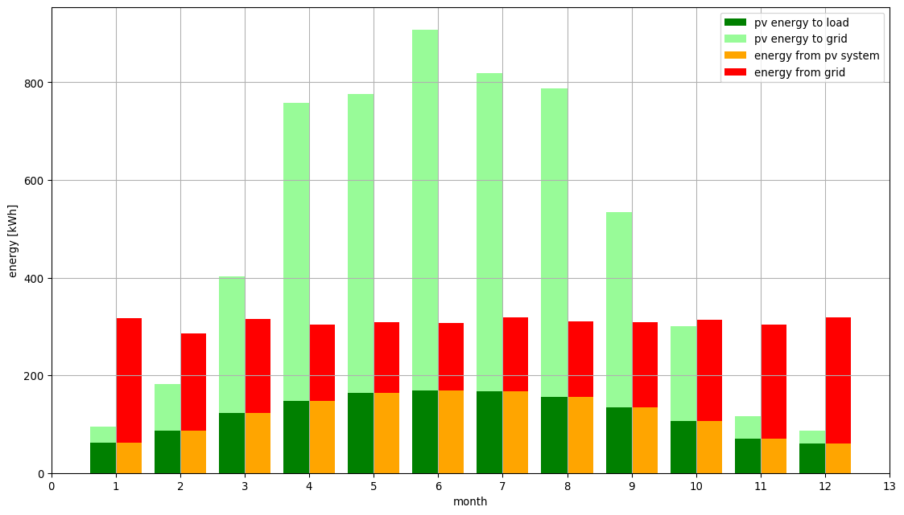
Productieoverschotten doen zich voor op momenten dat het eigenverbruik kleiner is dan de FV productie. Productieoverschotten worden in het openbare net geïnjecteerd (de lichtgroene balken in de grafiek). Op momenten dat het eigenverbruik groter is dan de productie, wordt het tekort aan elektriciteit uit het openbare net afgenomen (de rode balken in de grafiek).
Zelfvoorziening houdt in dat een elektrische installatie met zonnepanelen haar verbruik voedt met de elektrische energie die ze zelf produceert. Het verbruik van de elektrische installatie is hier het uitgangsgegeven. De zelfvoorzieningsgraad is de verhouding van het deel van het jaarlijks verbruik dat geleverd wordt door de eigen FV installatie op het totaal jaarlijks verbruik van de installatie of m.a.w. het percentage van het totaal jaarlijks verbruik dat door de eigen FV installatie kan gedekt worden.
Met zelfconsumptie of eigenverbruik wordt het deel van de elektrische energie bedoeld dat door de FV installatie wordt geproduceerd en in de eigen elektrische installatie wordt verbruikt of benut. De rest van de geproduceerde energie die niet onmiddellijk zelf kan worden verbruikt, wordt in het openbaar elektriciteitsnet geïnjecteerd. Wanneer men spreekt over eigenverbruik is dus de opbrengst van de FV installatie het uitgangsgegeven. De benuttingsgraad is de verhouding van het deel van de geproduceerde energie dat jaarlijks door de eigen installatie wordt verbruikt op de totale energieproductie van de FV installatie of m.a.w. het percentage van de jaarlijkse opbrengst dat voor eigenverbruik wordt benut.
Voor de elektrische installatie in kwestie berekent het computerprogramma dat jaarlijks:
ca. 2.265 kWh van het verbruik door het openbare net zal geleverd worden,
ca. 1.447 kWh van het verbruik door de FV installatie zal geleverd worden,
ca. 4.319 kWh van de door de FV installatie geproduceerde elektrische energie op het openbare net zal geïnjecteerd worden.
De zelfvoorzieningsgraad komt uit op ca. 39% en de benuttingsgraad op ca. 25%. De grafieken hieronder geven een maandelijks overzicht weer van de zelfvoorzienings- en de benuttingsgraad.
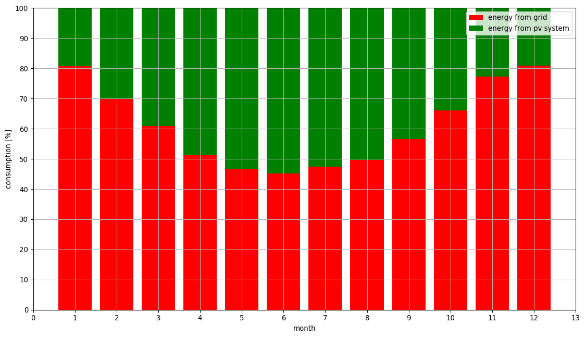
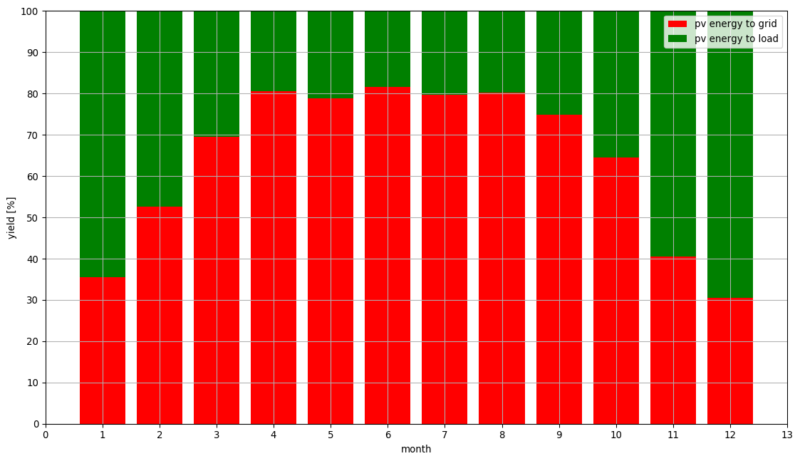
De zelfvoorziening- en benuttingsgraad zouden kunnen verbeterd worden door een opslagbatterij aan de elektrische installatie te koppelen. Eventueel productieoverschot overdag kan dan in de batterij worden opgeslagen en na zonsondergang worden de elektrische verbruikers vanuit de batterij gevoed en pas vanuit het net als de batterij leeg is. Derhalve zou de te voorziene batterijopslagcapaciteit kunnen geselecteerd worden op basis van het "nachttijdverbruik", d.w.z. het verbruik in een etmaal vóór zonsopgang en na zonsondergang. Het computerprogramma kan het dagelijks "nachttijdverbruik" analyseren. In casu wordt er bekomen dat het maximum dagelijks nachttijdverbruik op 9 kWh uitkomt, het minimum is 1 kWh en het gemiddeld nachttijdverbruik gedurende het jaar bedraagt rond 5 kWh.
In Jupyter Notebook DEEL 3 | SCHATTING VAN DE ENERGIEOPBRENGST onder Analyseresultaat 4: Energiestromen Met Batterijopslagsysteem worden de energiestromen berekend in het geval de installatie zou uitgebreid worden met een opslagbatterij die over een bruikbare opslagcapaciteit van 5 kWh beschikt. Het computerprogramma berekent dat jaarlijks:
ca. 988 kWh van het verbruik door het openbare net zal geleverd worden,
ca. 1.447 kWh van het verbruik rechtstreeks door de FV installatie zal geleverd worden,
ca. 3.042 kWh van de door de FV installatie geproduceerde elektrische energie op het openbare net zal geïnjecteerd worden,
ca. 1277 kWh van de door de FV installatie geproduceerde elektrische energie in de batterij zal opgeslagen worden en op latere, uitgestelde tijdstippen aan de verbruikers zal worden geleverd.
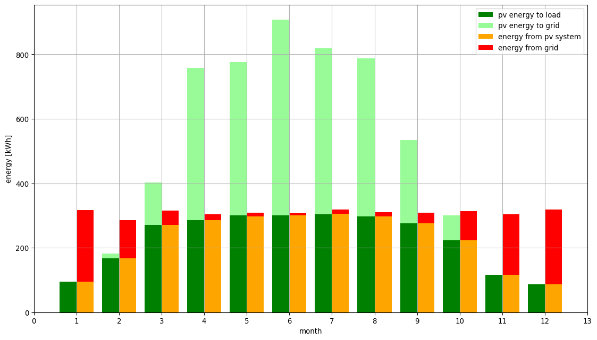
In de tabel hieronder worden de resultaten van de analyse zonder en met opslagbatterij naast elkaar samengevat:
| energiestroom | zonder batterij | met batterij |
|---|---|---|
| van het net naar de belasting [kWh] | 2264,81 | 987,81 |
| van de FV installatie naar de belasting [kWh] | 1447,34 | 2724,34 |
| van de FV installatie naar het net (injectie) [kWh] | 4319,41 | 3042,41 |
| netto netverbruik [kWh] | -2054,60 | -2054,60 |
| zelfvoorzieningsgraad [%] | 38,99 | 73,39 |
| benuttingsgraad [%] | 25,10 | 47,24 |
Men noteert dat de opslagbatterij van 5 kWh een spectaculair effect heeft op de graad van zelfvoorziening en zelfconsumptie. In de FV installatie zonder opslagbatterij wordt maar bijna 39% van het jaarlijks verbruik geleverd door de zonnepanelen; met de opslagbatterij loopt dit op tot bijna 74%. In de installatie zonder opslagbatterij wordt slechts 25% van de fotovoltaïsch geproduceerde elektrische energie door de eigen verbruikersinstallatie geconsumeerd; met de opslagbatterij wordt het eigenverbruik opgevoerd tot 47%. Noteer in het geval van het batterijopslagsysteem dat met nog maar 47% van de jaarlijkse opbrengst al bijna 74% van het jaarlijks verbruik wordt gedekt. Dit betekent dat er nog behoorlijk wat opbrengst in het net zal verdwijnen, wat ook blijkt uit de absolute energiewaarden: van de jaarlijkse opbrengst à 5767 kWh wordt zowat 3042 kWh in het net geïnjecteerd of zowat 53%. Er is dus nog ruimte voor extra verbruikers (bv. voor een koelinstallatie in de zomer, want het is dan dat de netinjectie het grootst zal zijn.)
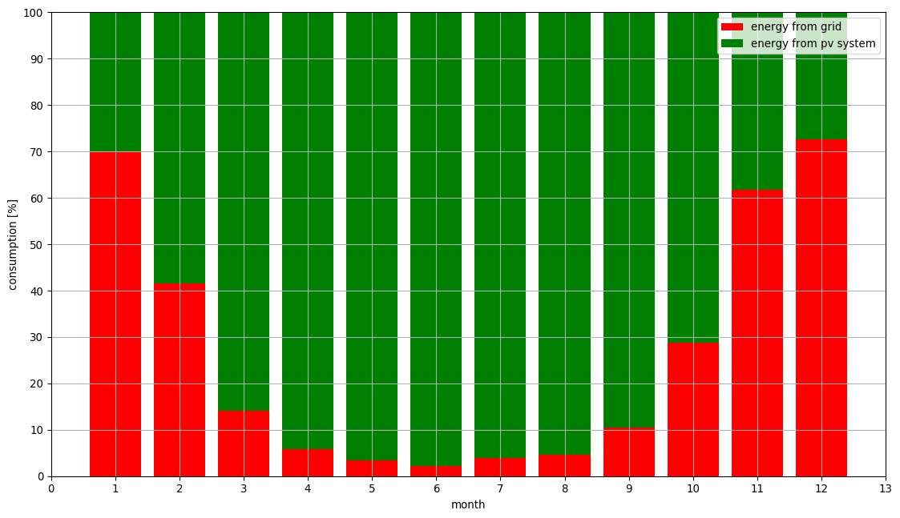
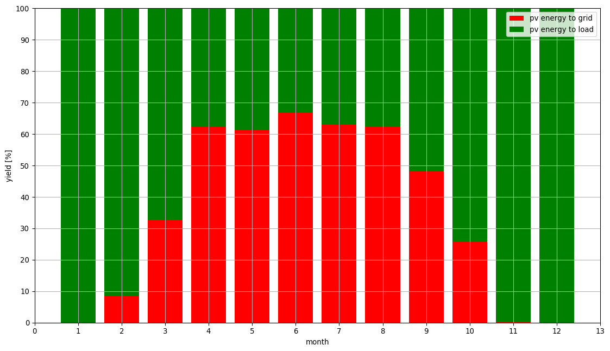
De gedachte "hoe groter de batterijopslagcapaciteit, hoe groter de graad van zelfvoorziening en benutting van zal zijn" dient genuanceerd te worden. In Jupyter Notebook DEEL 3 | SCHATTING VAN DE ENERGIEOPBRENGST onder Analyseresultaat 5: Zelfvoorziening en Zelfconsumptie Met Batterijopslagsysteem is aan het computerprogramma gevraagd om de zelfvoorzieningsgraad te analyseren in functie van de batterijopslagcapaciteit:
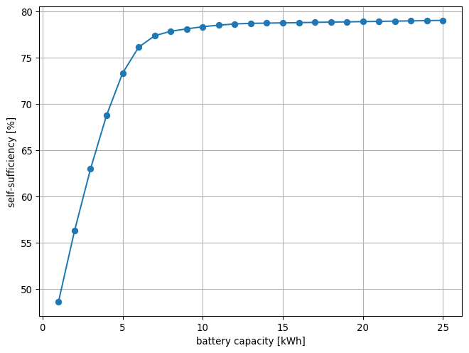
Men constateert dat de graad van zelfvoorziening aanvankelijk steil toeneemt met de opslagcapaciteit van de batterij, maar vanaf een opslagcapaciteit van ongeveer 5 kWh begint de toename al zeer snel af te nemen. Het is dan ook niet zinvol te opteren voor een opslagcapaciteit die veel groter is dan 5 à 8 kWh.
Tot 1 juli 2019 hoefde de vraag om wel dan geen opslagbatterij bij te plaatsen eigenlijk niet gesteld te worden, aangezien de methode met de terugdraaiende energiemeter (de zgn. 'compensatieregeling') toeliet om het openbare elektriciteitsnet als opslagbuffer te gebruiken. Doch, met de komst van de digitale energiemeter zal daar mettertijd wel verandering in kunnen komen.
In het geval van de mechanische, terugdraaiende energiemeter betekent de injectie van een productieoverschot in het net dat de teller achteruit draait en houdt de opname van elektrische energie vanuit het net in dat de teller vooruit draait. Aan het einde van de jaarlijkse verbruiksperiode wordt (en kan technisch gezien) enkel het verbruikte saldo door de energieleverancier aangerekend (het netto netverbruik). Indien dat saldo nul of negatief is (d.w.z. dat gedurende het jaar meer elektrische energie werd geïnjecteerd in het net dan er van het net werd afgenomen), betaalt men nul euro voor de verbruiksafhankelijke kosten, ook al werd elektriciteit aan het net onttrokken. Het achterliggende idee luidt dat het overschot dat men tijdens de "heldere maanden" in het net injecteert, men in de "donkere maanden" er terug af mag halen. Alleen als men meer afneemt van het net dan men injecteert, moet men het netto verbruikte deel betalen. Daarnaast moet, los van het verbruik, wel nog een "prosumententarief" worden betaald, dat kan beschouwd worden als een vergoeding voor het gebruik van het openbare net als opslagbuffer. Het prosumententarief wordt jaarlijks herzien, verschilt van netbeheerder tot netbeheerder, maar wordt door iedere netbeheerder berekend op basis van het nominaal AC-vermogen van de omvormer (zie website van de VREG).
Met de komst van de digitale energiemeter is het nu mogelijk om, zowel de inkomende, als de uitgaande energiestroom afzonderlijk te meten. In de plaats van een forfaitair prosumententarief te betalen op basis van het nominaal AC-vermogen van de omvormer, zal men er ook voor kunnen kiezen (althans tot 31 december 2020) het nettarief te betalen op de hoeveelheid elektrische energie die werkelijk van het net wordt afgenomen. Voor wat de overige verbruiksafhankelijke kosten betreft, zou het principe van de terugdraaiende teller gehandhaafd blijven (zie website van FLUVIUS).
Volgende kostenposten worden op het detail van mijn jaarlijkse afrekeningsfactuur van 2018 vermeld:
Behalve de posten 1 en 7 zijn alle overige aangerekende kosten van het verbruik afhankelijk. Wanneer men spreekt over de netkosten of nettarieven, dan vallen daaronder de distributie- en transport- of transmissiekosten.
De bedragen op mijn jaarlijkse afrekeningsfactuur van 2018 uitdrukt per eenheid:
| kostenpost | EUR/kWh (excl. BTW) | EUR/dag (excl. BTW) |
|---|---|---|
| vaste vergoeding | 0,1094540 € | |
| verbruik piekuren | 0,0637546 € | |
| verbruik daluren | 0,0450416 € | |
| kosten groene stroom | 0,0194477 € | |
| kosten WKK | 0,0025754 € | |
| distributiekosten | 0,1103125 € | |
| transport- of transmissiekosten | 0,0172387 € | |
| bijdrage energiefonds | 0,2970259 € | |
| bijdrage op de energie | 0,0019289 € | |
| federale bijdrage | 0,0032813 € | |
| totaal excl. BTW | 0,2635806 € | 0,4064799 € |
| totaal incl. 21% BTW | 0,3189326 € | 0,4918407 € |
| nettarieven incl. 21% BTW | 0,1543369 € |
De totale kostprijs per kWh inclusief BTW komt uit op bijna 0,32 EUR/kWh. De nettarieven nemen daarvan bijna de helft in beslag.
Uitgangspunt:
Op basis van een (geschat) jaarverbruik van 3774 kWh (cf. supra), komt in mijn situatie de totale verbruiksafhankelijke kostprijs zonder zonnepanelen neer op jaarlijks 1.203,65 EUR (3774 kWh x 0,3189326 EUR/kWh).
A. Indien ik zou opteren voor de hierboven besproken FV installatie zonder batterijopslagsysteem en met terugdraaiende energiemeter (de compensatieregeling), dan volgt dat:
Bijgevolg, onder optie A zou ik jaarlijks 752,90 EUR kunnen besparen op mijn elektriciteitsfactuur (onder de assumptie dat de verbruiksonafhankelijke kosten niet zullen wijzigen ten opzichte van de situatie zonder zonnepanelen).
B. Indien ik zou opteren voor de FV installatie zonder batterijopslagsysteem en zonder compensatieregeling (nettarieven worden aangerekend op de werkelijke afname i.p.v. het prosumententarief), dan volgt dat:
Bijgevolg, zou ik voor de optie B kiezen, dan zou ik tot 854,08 EUR kunnen besparen op mijn energiefactuur.
C. Indien ik zou opteren voor de FV installatie met batterijopslagsysteem en met terugdraaiende energiemeter (de compensatieregeling), dan zou mij dat evenveel voordeel opleveren als onder optie A hierboven, maar dan zou ik daarentegen wel met een hogere investeringskost worden geconfronteerd, gezien de aanschaf van het batterijopslagsysteem.
D. Indien ik tot slot zou opteren voor de FV installatie met batterijopslagsysteem en zonder de compensatieregeling, dan volgt dat:
Bijgevolg, zou ik voor optie D gaan, dan zou mij dit een besparing tot 1.052,17 EUR kunnen opleveren op mijn elektriciteitsfactuur.
Optie D lijkt de beste keuze, maar men moet ook oog hebben voor de terugverdientijd van de investering waarmee men deze jaarlijkse besparing op de elektriciteitsfactuur wenst te behalen. Tot op heden zijn batterijopslagsystemen behoorlijk prijzig. Maar sinds 1 augustus 2019 tracht de Vlaamse Overheid batterijopslagsystemen een duwtje in de rug te geven met een premie.